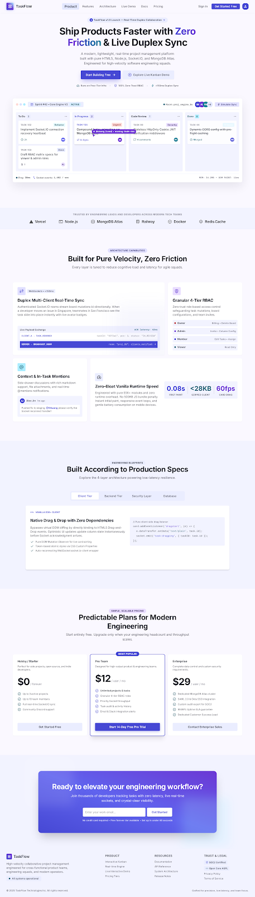
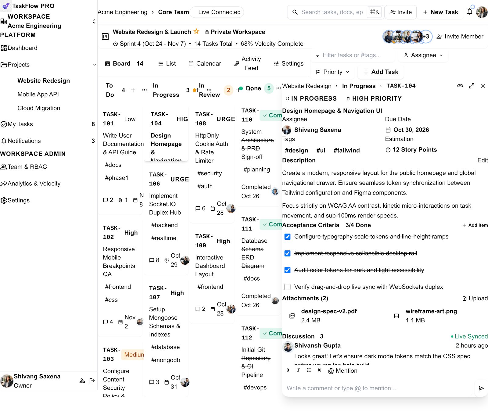
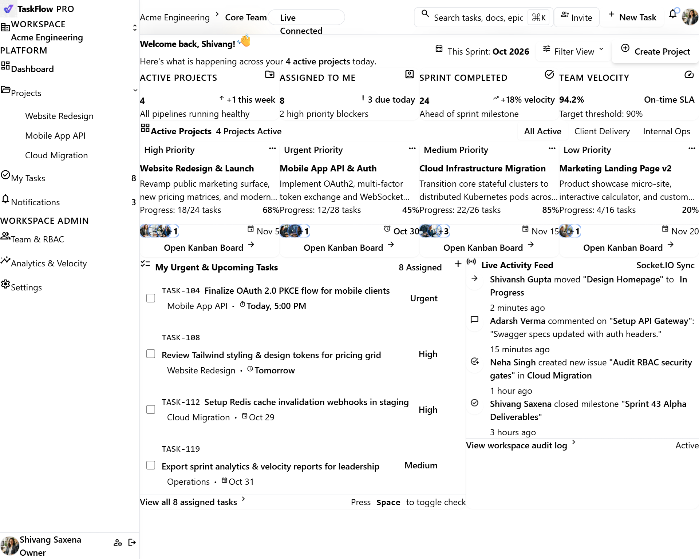

TaskFlow Interactive UI Showcase
Explore the high-fidelity interactive mockups for TaskFlow. Test the real-time Kanban board with native drag-and-drop, responsive workspace dashboard, and modern SaaS landing page.

Modern SaaS Landing Page
High-converting showcase featuring real-time collaboration value props, architecture breakdown, interactive feature tours, and pricing tiers.

Interactive Kanban Board
Full Kanban workflow with native HTML5 drag-and-drop, multi-column states, task detail drawer with real-time comment threads, and live search filtering.

Workspace Dashboard
Central operational hub tracking active sprint velocity, project portfolios, team RBAC distribution, notification center, and recent activity audit feeds.